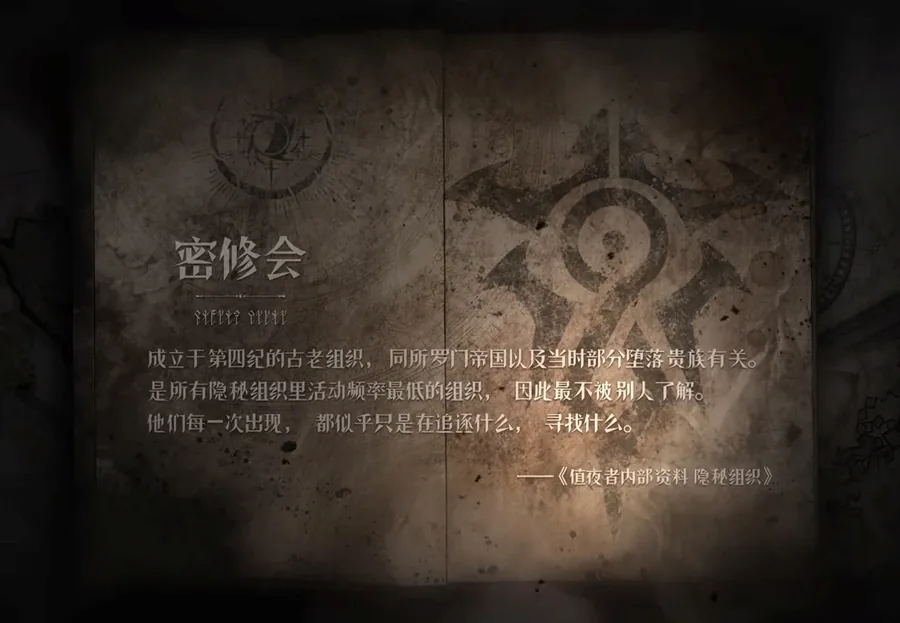

Image

← Back to Organizations & Factions archive
History
The Secret Order is one of the most secretive organizations around. What is known is that their founder, Zaratul, botched the advancement into a Sequence 1 Beyonder and turned into a monster.
Although they rarely take direct action, the organization appears to be actively searching for relics of the Antigonus Family, an Angel Family that once held control over the Fool Pathway. They previously possessed the Antigonus Family's Notebook, but it was accidentally sold by Regence. The Secret Order later dispatched members to retrieve it.
Following Zaratul's escape from the Foggy Town into the real world, Lucca Brewster received some intel that there has been some reshuffling among the Secret Order in Intis.
Characteristics
Their goals and philosophy are unknown.
The Secret Order has deep connections to the Intis Republic. They form Bureau 8, which is a branch of the Intis Intelligence Department.